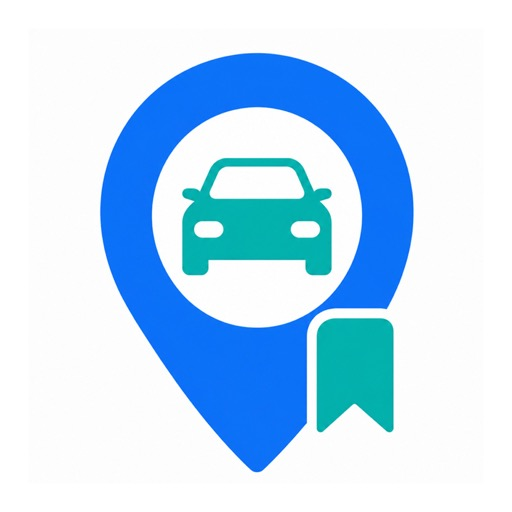
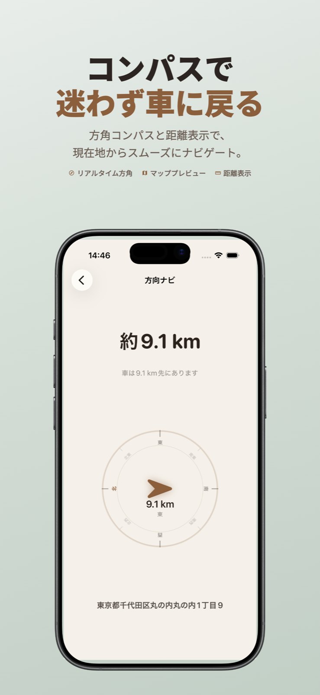

01
現在地を保存
車を停めた位置を地図に記録します。

TomeLog
トメログ
BOOK ARCHIVE · おでかけ
駐車位置、写真、階数、時間を残し、広い駐車場でも車へ戻りやすくする駐車メモです。
車を停めた位置を地図に記録します。

柱番号、階数、入口など、現地で役立つ手がかりを残せます。
停めてからの経過時間を確認し、必要に応じて通知を設定できます。
保存した位置を開き、戻るための手がかりにできます。
Made for you